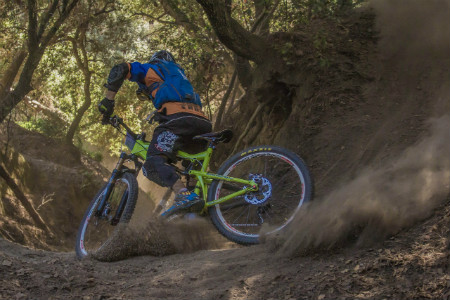
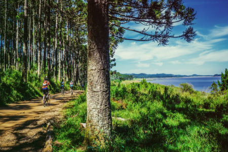
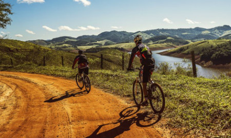

Bangtail Divide
24 mile loop
Level: Intermediate
Cost: $45 includes transportation
This trail is best from South to North. It starts out with plenty of switchbacks that will get your lungs and legs warmed up! From there, it levels out. There is some more climbing towards the end, but then you have several miles of down, so enjoy! This ride is Depending on level ride can take upto 6 hours. Bring a lunch to eat as a group at the end.
Shuttle leaves at 8 am

Emerald Lake
10 mile loop
Level: Intermediate
Trail Description
Some consider this the best ride in Montana. There is a stiff, 2k ft climb to a gorgeous high alpine lake. Ofcourse, this makes for a killer downhill on the return. You can continue beyond Emerald Lake to Heather lake for an additional mile, but the best of the singletrack is already behind you at this point.
Shuttle leaves at 8 am and 1 pm

Emerald Lake
10 mile loop
Level: Intermediate
Trail Description
Some consider this the best ride in Montana. There is a stiff, 2k ft climb to a gorgeous high alpine lake. Ofcourse, this makes for a killer downhill on the return. You can continue beyond Emerald Lake to Heather lake for an additional mile, but the best of the singletrack is already behind you at this point.
Shuttle leaves at 8 am and 1 pm